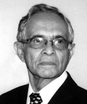

Internacionalmente, foi palestrante da OIT em Genebra e professor na França. Criou o Projeto DIOP, que implantou a primeira sala cirúrgica oftalmológica móvel do mundo. Desenvolveu projetos de energias renováveis e fomentou a criação de ONGs africanas. No Brasil, foi secretário da Educação em Goiás (governo Mauro Borges) e no Tocantins (governo Moisés Avelino), com forte atuação na área cultural. Entre 1991 e 1994, promoveu festivais de música, dança e teatro, encontros de escritores e oficinas culturais em todo o Estado. Também foi reitor da Unitins (1998–1999). Em 2008, recebeu da Universidade Federal do Tocantins o título de Doutor Honoris Causa por sua relevante contribuição à educação, à cultura e à integração internacional. Na ocasião, lançou os livros "As Áfricas que Descobri" e "Respirando o Pretérito".
